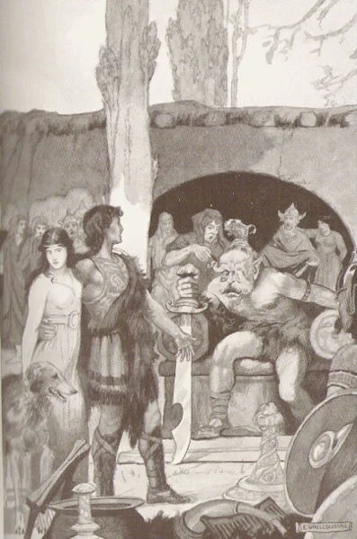

마비노기와 마비노기온
※ 트위터에 올렸던 글 백업입니다.

도대체 마비노기/마비노기온이 뭘까?
이건 마비노기가 처음으로 활자로 출판되고 영어로 번역되던 19세기에 알려진 것과 오늘날 학계의 (아마도) 올바른 인식이 다릅니다.
마비노기mabinogi란 웨일스어로 “아들, 자손”을 뜻하는 마브mab에서 온 것으로 보이며, 아마도 “자손 대대로 전해지는 이야기” 비슷한 뜻일 것입니다.
«헤르게스트의 붉은 서Llyfr Coch Hergest»에 실린 11개의 이야기를 «마비노기온»이라는 제목으로 영역하여 출판한 샬럿 게스트Lady Charlotte Guest는 11개의 이야기 모두를 마비노기라고 불렀습니다.
11개의 이야기는 이렇게 구성되어 있습니다.
- “마비노기의 네 가지”라고 불리는 4편의 연작 전통 설화
- 아서 왕 기사도 문학의 웨일스 버전인 3편의 로망
- 아서 왕 이야기의 원조인 «킬후흐와 올웬»
- 아서 왕 이야기를 통하여 중세 말기의 정치 상황을 비판한 «로나브위의 꿈»
- 브리튼의 옛 역사를 설명하는 이야기 2편
게스트의 번역은 역사상 처음 있는 시도였고, 지금처럼 많은 정보를 활발히 접하고 교류할 수 있는 시대도 아니었기에 온갖 오역과 오개념이 가득했습니다.
불행하게도 책 제목인 «마비노기온» 자체도 오개념이었지요.
쇼네드 데이비스Sioned Davies1에 따르면, 본래 “마비노기”란 위에 나열한 11개 이야기 중 «마비노기의 네 가지Pedair Cainc y Mabinogi»라고 불리는 4편의 연작 전통 설화만을 가리킵니다. 그 제목은 각각
- «디베드의 군주 프윌Pwyll Pendefig Dyfed»
- «리르의 딸 브란웬Branwen ferch Llŷr»
- «리르의 아들 마나위단Manawydan fab Llŷr»
- «마소누이의 아들 마스Math fab Mathonwy»
입니다.
나머지 설화들은 물론 웨일스에서 오래 전부터 전해지는 가치 있는 이야기인 것은 맞지만, 어쨌든 마비노기는 아닌 것입니다. 단군 신화가 판소리는 아닌 것처럼요.
어쨌거나 mabinogi라는 단어는 본래 단수와 복수형이 같은, 혹은 단수로는 쓰이지 않는 단어였던 것으로 보입니다.
그런데 중세의 한 필경사가 이걸 단수 명사로 착각하고 mabinogion이라는 복수 명사를 만들어내었지요.
흔히 이것이 샬럿 게스트의 잘못으로 여겨지지만, 게스트 이전에도 많은 웨일스 학자들이 마비노기온이라는 (잘못된) 용어를 사용해 왔습니다.
마비노기와 마비노기온의 차이를 다시 정리하자면,
마비노기
- 마비노기의 네 가지라고 불리는 특정 4종류의 설화만을 가리킴
- 19-20세기에 모든 웨일스 고전 설화를 가리키는 말로 (아마도) 잘못 쓰였음
마비노기온
- 마비노기라는 단어에 대한 문법적 오해로 생겨난 말
- 영어 화자의 곡해가 아니라 웨일스 학자들이 만든 말임
- 위의 “마비노기”를 포함하는 샬럿 게스트의 유명한 저서 이름으로도 쓰임
여담으로, 샬럿 게스트의 저서를 한국어로 번역한 «마비노기온: 브리튼 켈트 전설과 아서 왕의 기원»이 이 오류를 알면서도 «마비노기온»이라는 제목을 그대로 채택한 이유는……!!!
마비노기라고 하면 게임밖에 검색이 안 되기 때문입니다……………… orz
- 1S. Davies의 «마비노기» 번역본은 거의 현대 표준 판본이나 마찬가지입니다.